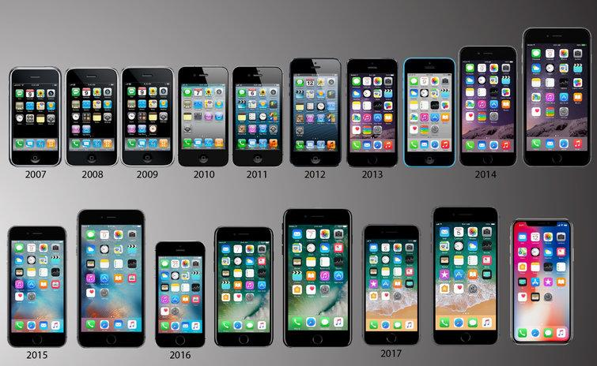

Welcome to the iPhone Hub
Explore the evolution of iPhones and dive into the world of innovation and technology.
The home where anything iPhone is!
The iPhone has significantly changed the way we live and communicate. From its debut in 2007 to today, it continues to lead the smartphone industry with cutting-edge technology and features.
iPhone Models Through the Years

iPhone 5
Introduced the 4-inch screen, 4G LTE, and Apple's A6 chip, making it faster and more powerful.
iPhone 5c
The colorful, plastic-bodied iPhone 5c brought a more affordable model to the market.